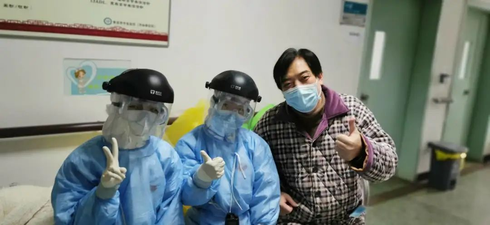
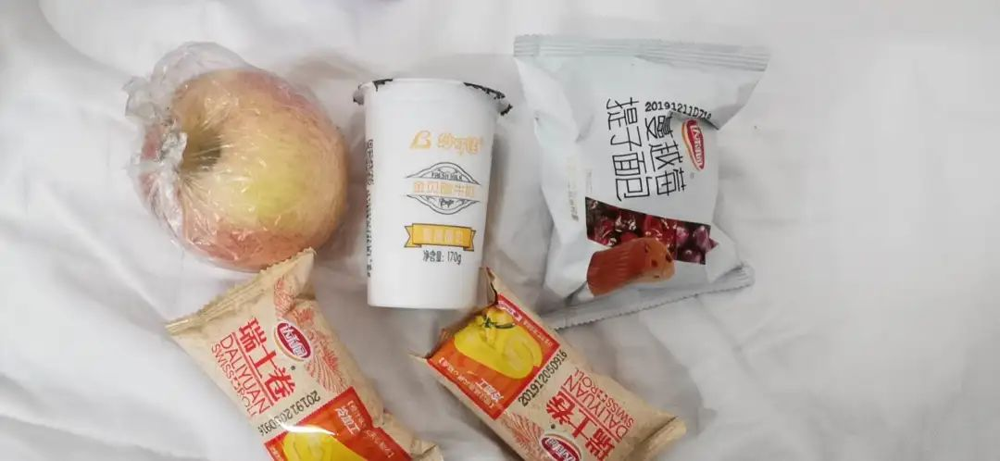

金银潭医院的昼与夜
原文链接 备份链接 从第一例患者入院，金银潭医院已超负荷运转近两个月。医生、护士、病人、志愿者，都在为新冠病毒不眠不休，昼夜奋争。绝望和希望、晦暗和明朗、苦涩和感动，也交织纵横，罩住整座江城。 全文7410字，阅读约需14分钟 点击下图 …
澎湃新闻记者 杨喆 实习生 陈思旭
2月15日下午2点30分，申波终于走出了湖北省黄石市传染病医院。去武汉参加公司年底聚餐时他不幸感染了新冠肺炎，1月23日被确诊，此后他在医院里共住了23天。
这23天，申波觉得自己像是走了一趟鬼门关。但在医生的救治和自身信念的支撑下，一名新冠肺炎重症患者顺利治愈出院。于他而言，这23天，自己经历了一次重生。

申波和护士们的合影。受访者供图
一次年终聚餐引发的感染
黄石距离武汉并不远。
1月17日下午，申波自驾赴武汉参加公司年底聚餐，作为这家保险企业在黄石分公司的高管，这样的“双城奔波”对申波来说已是常态。
“当时在疑似SARS的消息引发担忧之后，专家说持续人传人风险较低，于是公司领导就安排我们部分高级管理者去武汉一起聚个餐。”申波对澎湃新闻如是说。
申波到达武汉时没有见到有人做防护，因为当时大家都认为“不会人传人，没有新增病例，病情也是可控的”。
当天聚餐结束，申波顺便把在武汉的13岁女儿娜娜接回黄石的家，和父母一起过年。
1月19日，申波开始发低烧。当时他以为这只是受凉或者过度劳累，没有放在心上。由于身体不适，申波把公司原定23日才开始的假期提前到了20日开始。但对于员工们年底聚餐的提议，他没有采纳。“事后回想起来很后怕，但又很万幸，不然如果真的聚餐，不知道又要拖多少人下水。”申波说。
三天后，申波被确诊为新冠肺炎入院。
申波告诉记者，他是最早发病的。之后，当时参与公司聚餐的近一百位同事中，有十几个人也陆续被确诊为新冠肺炎病例。“后来我发现，我们吃饭的酒店距离华南海鲜市场还不到一公里。”
“阎王爷要收我就让他收，不收我就好好活着。”
直到1月21号高烧至38.9℃，申波才去了家附近的黄石市中医医院钟楼院区就诊。由于没有咳嗽、头痛等其他症状，申波没往新冠肺炎上想。但出于谨慎，他检查了甲流和乙流，结果都是阴性。于是，申波让医生开了几副中药准备回家慢慢养病。“以往感冒发烧的时候，我吃中药就能治愈，但没想到这次完全控制不了。”
1月22日，申波再次高烧不退，在黄石市中医医院钟楼院区，医生给他打了针。那时他发现，急诊，发热门诊的医生们都开始穿上了防护服。
23日，高烧变得更加严重，申波说，当时母亲用浸了酒精的冷毛巾为他物理降温，“我母亲都七十多岁了。”反反复复的降温，但高烧一直持续到晚上，申波感觉自己“实在扛不住了”。当天他被家人送到了黄石市中医医院钟楼院区。
在市中医医院，他被告知需要去黄石市中心医院检查。申波又赶到中心医院。在那里他验了血，拍了CT，检查结果显示为“毛玻璃状白肺”。中心医院的医生告诉他“原先属于哪个医院还是去哪个医院”，让他回到黄石市中医医院观察。当时已是23日晚，黄石市中医医院24日早晨将他收治隔离。
1月25日申波又被120救护车转移到了中医医院的团城山院区（黄石市传染病医院）治疗。“当时才感到吓人，见到的护士和医生每个人都全副武装，只能看得到一双眼睛。”申波回忆。
1月26日早上，申波的核酸检测结果显示阳性，27日他被转入确诊病人所在的五号楼。“当时病人还不多，医院其他科室都还在正常运转。”申波记得自己大概是黄石全市的第三十多号确诊病例。
进入传染病医院后，申波就没再见过外面的世界，他说自己感觉“有点痛苦”。在隔离病房，生理和心理上都很难受。每天除了强迫自己灌下三大杯白开水，基本吃不下任何东西。
申波回忆，后来自己的情况非常严重，最高时烧到了40度。住了四天之后，血液检查结果显示他恢复得不太好，但那时候已经走不动路了，是被护士用轮椅推着去做CT的。检查完后直接被推进了ICU病房。在ICU，呼吸机、心电监测全部都上了。申波说，当时他人虽然清醒，但完全不能动，只能躺在病床上。
在ICU的3天是最危险的时候，医院每天给他打针、吸氧，护士不停给他降体温。申波告诉记者，医护人员的护目镜上全部是水珠，什么也看不见，抽血或者打针都是凭手感。“我身高一米九，体重二百多斤，护士们照顾我真的很不容易。”

护士正在工作
申波觉得自己既然确诊了就要好好配合治疗。“阎王爷要收我就让他收，不收我就好好活着。”谈起当时的心态，他认为自己还是很乐观的。
与家里人的通话中，申波怕父母和女儿担心，每次都说自己身体好多了，烧已经退了。“每天上午打个电话，因为到了下午又开始发烧，没有力气说话。”
ICU病区有四个病房，每个病房内有四张床。申波回忆，同病房的另外三位新冠肺炎重症病人，一位气管被切开，瞳孔放大。一位老爷爷“出气进气差不多，有一下没一下”，还有一位老阿姨隔几分钟就要叫一嗓子。护士问申波，不感到害怕吗？“我说不怕，因为相信护士和医生会照顾好我。”
乐观积极感动病友
在护士们的悉心照顾下，凭借着良好的心态，申波的病情逐渐好转。
2月2日，他被从ICU转至8楼病房继续接受隔离治疗，在这里他一待就是13天。
此时的医院已经把其他病人全部转移，成为黄石首个治疗重症新冠肺炎患者的医院。
“医护人员依旧全副武装，当时病人已经很多了，每个病房本来有三个床位，现在都被加了一到两张床。4小时一次轮班，每班3个护士负责30多位病人。看到有的小护士还没有氧气瓶高，要把氧气瓶搬来搬去，我真的很想上去帮她们。”申波说。
从病房的窗户向外望去，申波发现自己所在的病区已经全部被封锁，唯一的出入口还有特警把守。“出去要拿医院的通行证明，进来的只有救护车和病人。”
“三点多会醒来，五点多再入睡，六点多再醒来。”在八楼的隔离病房里，申波常常难以入睡，但他尽力不让自己的心态走下坡路。
从护士那里申波了解到，同一层楼的病友中，有位年轻人几乎每两分钟就会因各种情况叫来护士，说自己呼吸困难、喝水难以下咽、咳痰咳不出来，或者喘不过气。他不停地问护士自己是不是活不长了。
申波在病友群里@他，告诉他如果感到难受可以给自己打电话。“结果他真的打电话来了，两点半打，四点半也打。”第二天，这位年轻患者跑到了病房门口，认出申波后，那个年轻人说看到申波觉得自己也有信心了。申波告诉记者，这位年轻病友已经出院了，比自己还早了一天。
在八楼隔离期间，医院会给病人配来中药。“那个中药很苦，我大概吃了二十几副。”申波说。“我觉得中西药结合比较有效果。”家人给申波送来了红枣和小米，他每天还会用自己的焖烧杯煮粥。“医院里的一日三餐也很好，水果、牛奶、糕点都有，真的很感谢政府和医护人员对我们的关心和照顾。”躺病床上的申波，看到解放军和各地医疗队共赴前线抗击疫情的新闻，非常感动。

每日的糕点水果
2月11日，申波的CT结果和核酸检测显示他的病情进一步好转。13日核酸检测结果继续保持了阴性，经过武汉专家组会商，确认他达到了出院标准。
2月15日下午2点30分，申波终于走出了医院了。他告诉记者，住了23天医院，在ICU待了3天，相当于在鬼门关里转了一圈。
“需要A型治愈者血浆的时候就打电话给我”
2月15日，恰好是女儿娜娜14岁的生日，申波说自己出院时“兴奋地蹦了起来”，回忆起刚出现病症的时候，他很庆幸严格禁止女儿靠近自己的房间，也在无形中保护了女儿。
申波确诊后，父母和女儿都被隔离，女儿由于未被感染，被送到当地集中隔离的指定宾馆。“我和她妈妈都很着急，她才13岁，不知道能不能独立生活好。”申波当时很焦虑。孩子的妈妈当时在武汉，经过向政府部门申请，由警察陪同，母亲回黄石把女儿接到身边了。但申波的父母还是被感染了，目前在黄石有色医院隔离。申波说，目前父母的症状较轻，应该也会逐渐好转。
到家后的申波打扫了卫生。因为当时父母和女儿隔离的时候走得非常急，桌上饭菜还没处理，自己回来的时候都发霉了，他收拾了好一会儿。
在和女儿的通话中，申波祝女儿生日快乐。“你过生日还送了爸爸一个礼物——让爸爸出院了，爸爸很高兴”。和女儿的交流让申波感到很幸福。
申波后来得知，自己曾住过的ICU病房有几名护士也有被感染的情况。他回忆说，“那些护士都很辛苦，都已经满头大汗了，也不能取下防护用品。我问怎么吃饭，她们说不能吃。水也不能喝。上洗手间也不行，大家都穿上了尿不湿。”
听说痊愈病人的血浆分离出的血清对治疗重症病人很有效，申波向医院申请捐献血浆。“医生告诉我目前需要O型血，而我是A型血，暂时用不上。我就告诉他们需要A型血时请打电话给我，我可以立刻捐献。”申波说。
目前申波还在居家隔离，每天他都会向社区汇报体温，社区隔一两天会上门问询。他告诉记者，等疫情结束后，最期待的就是和家人再次重逢。
（应采访者要求，申波为化名。）
本期编辑 邢潭
推荐阅读


原文链接 备份链接 从第一例患者入院，金银潭医院已超负荷运转近两个月。医生、护士、病人、志愿者，都在为新冠病毒不眠不休，昼夜奋争。绝望和希望、晦暗和明朗、苦涩和感动，也交织纵横，罩住整座江城。 全文7410字，阅读约需14分钟 点击下图 …
原文链接 备份链接 她们是疫情中心湖北的待产准妈妈，其中有疑似或确诊的新冠病毒感染者。对于医生护士来说，无论是守护孕妇，还是保护即将降生的新生儿，都是巨大挑战 摄影/本刊记者 王小 *刘以秦 王博 房宫一柳 | 文 * *马克 | 编辑* …
原文链接 备份链接 中青报·中青网记者白皓 见习记者白毅鹏 确诊为新冠肺炎后的第13天，乐乐（化名）出院了。这一天，是她出生后的第67天。 在这场新冠肺炎阻击战中，她是目前全国被治愈出院的最小患者。贵州省卫健委公开发布的信息显示，乐乐2 …
原文链接 备份链接 “他是一个英雄” 2月18日上午10点54分，武昌医院院长刘智明因感染新冠肺炎，经抢救无效去世，享年51岁。 “刘院长是一个很负责的人，内心非常强，我们医院的同事都很敬重他。他长得高高大大的，很有才气，结果说没就 …
原文链接 备份链接 澎湃新闻记者 赵思维 发自武汉 实习生 夏梦洁 从1月23日21时许发出第一条求助微博，25岁的新冠肺炎痊愈者武康发布了50余条微博，粉丝从1000涨至现在的179万粉丝。 这些微博记录了他从发病住不进院的无助、被病魔 …